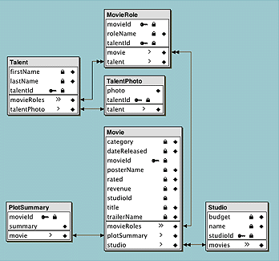

| PATH |

You are almost ready to add custom behavior to your enterprise objects. But first you need to add additional relationships to the Movies model.
If you used the example Movies model, you can skip most of this section. However, you should, review Table 3-1 to make sure that the relationship names in the your model match the ones defined in the table.
Movies tell stories using a series of events or plot. In the plot, people or objects interact according to their particular roles in the movie. Those movie roles are portrayed by actors, or talent. To help cast a movie, actors' photos can be examined to determine if they have the appropriate "look" for a role.
In the Movies model, Movie is associated to PlotSummary through
the plotSummary relationship.
There are reciprocal relationships between the Movie and MovieRole
objects. The Movie entity has a movieRoles relationship
that associates a Movie with its MovieRoles. In turn, the MovieRole
entity has a movie relationship
that associates a MovieRole with the Movie that it belongs to.
The Talent entity has relationships that associate it with
the TalentPhoto and MovieRole entities. The movieRoles relationship
determines the roles the Talent object (actor) stars in. The photo relationship
associates Talent objects with the actor's picture, or TalentPhoto object.
You will now add the remaining relationships to the model.
In the Groups & Files list of Project Builder's main window, open the Resources group.
Double-click Movies.eomodeld.
Select the Movie entity.
Choose Property > Add Relationship.
Choose Tools > Inspector.
Select To Many in the Destination group.
Select MovieRole as the destination entity.
Select movieId as the source attribute in the Joins group.
Select movieId as the destination attribute.
Click Connect.
EOModeler
names the relationship movieRoles because
the relationship's target is MovieRole and it's a to-many relationship.
It is strongly recommended that you use the names that EOModeler
provides as they describe both the target of the relationship and
its type. However, you are free to use a naming convention that will
help the users of your model to easily understand it.
In the Movie Relationships Table, click in the column in the movieRoles relationship information row, to make it a client-side class property.
Select the MovieRole entity.
Choose Property > Add Relationship.
Ensure To One is selected in the Destination group.
Select Movie as the destination entity.
Ensure movieId is selected as the source and destination attribute.
Click Connect.
EOModeler names the relationship "movie."
In the MovieRoles Relationships table, click in the column in the movie relationship information row, to make it a client-side class property.
Table 3-1 lists all the relationships that the Movies model should contain. Make sure all of them are entered in your model. Also remember to make them client-side class properties (see "Using EOModeler to Add Relationships" for details).
When finished, your model's diagram should look like the one in Figure 3-2.
Figure 3-2 Diagram of the Movies model
At this point your model is complete.
© 2001 Apple Computer, Inc.